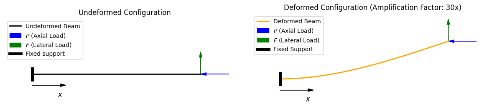

Report dashboard: 1DOF workflow, linear beam, P–Δ, Xara comparison, and axial force diagnostics
UC Berkeley SEMM
Professor: Khalid M. Mosalam · Instructors: Guanren Zhou, Fan Hu · Students: Luciana Vargas, Carlos Quezada, Facundo Pfeffer
Goal: Confirm your environment and establish a minimal workflow: model → analyze → plot. The assignment asks to run Notebook 0 end-to-end, then add three modifications: (A) change the loading protocol (e.g., smaller increments and more steps), (B) change a stiffness parameter and re-plot, and (C) add a second loading branch (load up and unload) and plot the full path, with plots and a short interpretation per change.
The problem at hand constitutes a linear elastic spring model; therefore, the displacement depends only on the final applied load and not on the size of the load increments. Accordingly, refining the load step should not change the displacement when the total load reaches $P = 10$, yielding the closed-form response $u = P/k$, which is confirmed in the notebook. The plot below compares different numbers of load steps (same total $P$); the final displacement is unchanged.
Figure 1.1: Change in loading protocol — different numbers of load steps (same total P).
An increase in the stiffness parameter $k$ implies a proportionally smaller displacement for the same load level, whereas a decrease in $k$ implies a proportionally larger displacement $u$. This proportional trend is confirmed programmatically in the notebook and is evident in the plot below.
Figure 1.2: Effect of stiffness parameter $k$ on displacement.
Adding a second loading branch that displays the unloading process allows us to visualize more clearly the linear elastic behavior of the spring: the unloading portion of the “loop” perfectly overlaps the initial loading portion. There is no hysteresis; the response is reversible and path-independent.
Figure 1.3: Full load–unload path (second loading branch). $P$ vs $u$ for the 1DOF spring: load increased to $P$ then decreased to $P/2$; loading (blue) and unloading (orange dashed) overlap (linear elasticity).
Interpretation: All three changes confirm that for a linear elastic 1DOF spring, the response is path-independent and determined solely by $u = P/k$. Refining the load protocol does not alter the final displacement; changing $k$ scales $u$ inversely; and the load–unload path closes exactly, with no permanent deformation.
From this section onward we consider the cantilever beam (not the 1DOF spring of Problem 1). The figure below illustrates the problem: a beam of length $L$ and flexural rigidity $EI$ with fixed left end, and axial load $P$ (blue) plus lateral tip load $F$ (green). The right panel shows the deformed configuration (deflection exaggerated). The interplay between $P$ and lateral deflection is the P–Δ effect studied in Problems 2–5.

Figure 2.0: Beam problem used in Sections 2–5. Undeformed (left) and deformed (right). Fixed support at left; $P$ (axial, blue) and $F$ (lateral, green) at the tip. Deformation shown with 30× amplification.
Model: Cantilever beam/column of length $L$, flexural rigidity $EI$, tip lateral force $F$, and axial load $P$. Baseline parameters (used unless a subpart asks to vary them): $L = 6.0\,\text{m}$, $EI = 1000.0\,\text{kN}\cdot\text{m}^2$, $F = 10.0\,\text{kN}$, $P = 50.0\,\text{kN}$. The assignment asks for (1) the linear closed-form tip deflection $\Delta_{\text{lin}}$ and (2) a BVP check: compute $\Delta_{\text{BVP,lin}}$ with $P=0$ and report absolute and relative errors.
With the given geometry and material properties, the linear tip deflection is obtained from the Euler–Bernoulli ODE [1, 2, 3]. For a cantilever with tip force $F$:
$$\Delta_{\text{lin}} = \frac{FL^3}{3EI} = \frac{(10.0\,\text{kN})(6.0\,\text{m})^3}{3(1000.0\,\text{kN}\cdot\text{m}^2)} = 0.72\,\text{m}.$$
This calculation is performed in the notebook both explicitly and by solving the linear ODE, as discussed in Section 2.2.
Using Notebook 1’s BVP approach with $P = 0$ (or using the linear ODE), the numerical tip deflection $\Delta_{\text{BVP,lin}}$ is computed and compared to $\Delta_{\text{lin}}$. The absolute and relative errors are $e = |\Delta_{\text{BVP,lin}} - \Delta_{\text{lin}}|$ and $e_r = e/|\Delta_{\text{lin}}|$. The governing equation for the linear case is $EI v''(x) = F(L-x)$ with $v(0) = 0$, $v'(0) = 0$. The BVP solution matches the closed-form result to within numerical precision.
Goal: Reproduce and explain the difference between the two approaches. The governing equation (as used in Notebook 1) is $EI v''(x) = F(L-x) - P\,v(x)$ with $v(0) = 0$, $v'(0) = 0$. Two solution strategies are compared: (1) Fixed-Δ: $\Delta$ is taken as $\Delta_{\text{lin}}$ and treated as known; (2) Self-consistent: iterate $\Delta^{(k+1)} = v^{(k)}(L)$ from $\Delta^{(0)} = \Delta_{\text{lin}}$ until $|\Delta^{(k+1)} - \Delta^{(k)}|/|\Delta^{(k+1)}|$ is below a stated tolerance.
In the fixed-Δ (baseline) approach, the tip displacement $\Delta$ is set equal to the linear estimate $\Delta_{\text{lin}}$ and held fixed. The resulting tip displacement from this one-shot solution is $\Delta_{\text{fixed}} = 1.15491\,\text{m}$. This value does not account for the feedback between deflection and secondary moments.
The self-consistent iteration was implemented with a convergence tolerance of $10^{-8}$ on the relative change in $\Delta$. The nonlinear solver converged in 70 iterations to a converged tip displacement $\Delta_{\text{sc}} = 2.63458\,\text{m}$. The resulting amplification ratio is $\Delta_{\text{sc}}/\Delta_{\text{lin}} = 3.65914$: the true P–Δ response is about 3.66 times the linear deflection.
The fixed-Δ approach is inaccurate because it decouples the geometric nonlinearity from the structural response: it assumes that the secondary moments are generated by a static, pre-determined displacement (the smaller linear deflection $\Delta_{\text{lin}}$). In a true nonlinear P–Δ problem, there is a feedback loop: the axial load increases the deflection, which makes the moment arm longer, which in turn generates larger moments and more deflection. By fixing $\Delta$ at the initial estimate, the method ignores this amplification process and fails to update the moment arm to reflect the structure’s actual deformed shape. This leads to non-conservative results that differ increasingly from the true solution as $P$ increases.
Goal: Replicate the cantilever as a discretized FE model and compare transformation options. FE modeling requirements: Use a 2D model with DOFs $(u_x, u_y, \theta_z)$; discretize the cantilever into $n_{\text{ele}}$ equal elements; apply loads in two steps—(1) axial load $P$ to converge, then (2) lateral load $F$ in increments. Compare three geometric transformation options: Linear, PDelta, and Corotational.
With $n_{\text{ele}} = 10$, the tip lateral displacement $u_x(L)$ for each transformation type is reported below (Table 1).
| Method | Tip disp. $u_x(L)$ [m] | Amplif. $u_x(L)/\Delta_{\text{lin}}$ |
|---|---|---|
| BVP Linear | 0.720 | 1.000 |
| BVP Self-consistent P–Δ | 2.635 | 3.659 |
| Xara Linear | 0.720 | 1.000 |
| Xara PDelta | 2.620 | 3.639 |
| Xara Corotational | 2.071 | 2.876 |
Table 1: Baseline comparison at one discretization ($n_{\text{ele}} = 10$).
4.2.1 Obtained results. The tip displacement was computed for $n_{\text{ele}} \in \{2, 5, 10, 20\}$. In the BVP solver, $n_{\text{ele}}$ only affects the number of points where the ODE solution is evaluated; the BVP reference values do not change. For Xara, coarser meshes ($n_{\text{ele}} = 2$) give 2.325 m (PDelta) and 1.943 m (Corotational); at $n_{\text{ele}} = 20$, Xara PDelta reaches 2.631 m and Corotational 2.075 m.
Figure 4.1: Tip displacement $u_x(L)$ vs. $n_{\text{ele}}$ for each formulation.
4.2.2 Trend discussion. For the linear analyses, regardless of the engine (χara or BVP), the result is 0.72 m for all discretizations—equilibrium is formulated in the undeformed configuration [2, 3]. The self-consistent P–Δ method enforces equilibrium in the deformed configuration and approaches 2.63458 m as discretization increases. The Corotational method follows a similar trend but with smaller tip displacements (Section 4.3).
Increasing the number of elements reduces discretization error and produces convergence [4, 5]. The PDelta transformation captures the classical second-order (destabilizing) effect of a compressive axial load through the lateral deflection, approaching the BVP P–Δ prediction as $n_{\text{ele}}$ increases. The Corotational02 transformation evaluates each element in a frame that follows its current (non-small) rotation, using updated geometry at each step. Since $K_G$ depends on the element axial force $N$, a smaller effective compressive force toward the free end reduces the destabilizing P–Δ amplification. Corotational02 therefore predicts a stiffer response and a different limiting tip displacement than PDelta. Section 5.2 examines the axial-force distribution $N/P$ along the member.
Goal: Verify whether the axial force is uniform along the member and relate the results to the formulation and discretization. For one discretization ($n_{\text{ele}} = 10$), an axial force measure $N_e$ per element is extracted for both PDelta and Corotational and plotted vs. element index (or height).
For $n_{\text{ele}}=10$, the axial force measure $N_e$ per element for PDelta and Corotational is plotted vs. element index (or height) below.
Figure 5.1: Axial force and related quantities vs element/position.
Optional: Open N_e / P vs element (fig_np_coro) in a new tab if available.
5.2.1 Variation of axial force $N_e$ across beam span. The Corotational formulation evaluates element forces in an updated (rotated) local frame, whereas PDelta keeps the element orientation tied to the original configuration. The extracted $N_e$ is not uniform in the Corotational case: it is close to 1.00 near the fixed end (element 1, where rotations are small) and decreases toward the tip, reaching approximately 0.75 at element 10. PDelta returns $N_e \approx 1.00$ along the member. Kinematically: as the member rotates, the applied load $P$ is increasingly decomposed into axial and transverse components in each element’s updated local axes, so the axial component captured by Corotational reduces toward the tip where rotations are larger. With mesh refinement (increasing $n_{\text{ele}}$), the Corotational distribution at the fixed end is expected to approach the PDelta result (1.00).
5.2.2 Stiffness change. Increasing flexural stiffness (e.g. to $EI = 2000\,\text{kN}\cdot\text{m}^2$) reduces tip deflection and rotations, so $N_e$ becomes more nearly constant along the member in the Corotational formulation and the nonlinear solve becomes easier—iteration count drops (e.g. from 70 to 20). Decreasing stiffness (e.g. to $EI = 850\,\text{kN}\cdot\text{m}^2$) produces larger rotations and stronger geometric nonlinearity, increasing amplification and making convergence more demanding (e.g. about 107 iterations). When gradually increasing $P$ toward the Euler critical load, displacements grow rapidly and convergence becomes more difficult.
5.2.3 Instability analysis: compressive load increment. The incremental compressive load $P$ plotted against tip displacement shows that increasing $P$ leads to instability near the Euler critical load $P_{cr} \approx \pi^2 EI/(2L)^2 = 68.5\,\text{kN}$ for the nonlinear transformations (linear theory does not capture instability). The Corotational and PDelta formulations exhibit similar initial stiffness; at higher load levels the Corotational response is stiffer, consistent with the stiffness discussion above.
Figure 5.4: Incremental compressive load $P$ vs. tip displacement for Linear, PDelta, and Corotational formulations; $P_{cr}$ indicates Euler critical load.
5.2.4 Instability analysis: tensile load increment. For increments in tensile load, no instability is observed; the tensile $P$ contributes to returning the structure toward its original configuration.